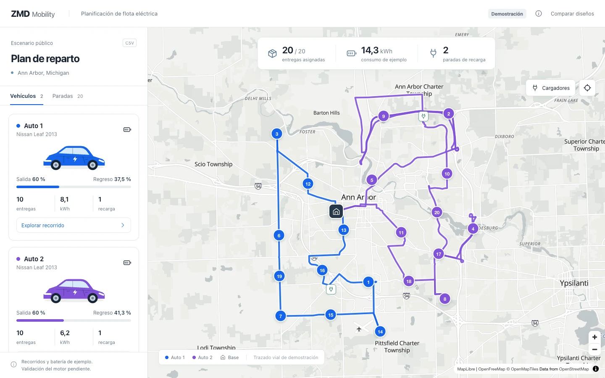
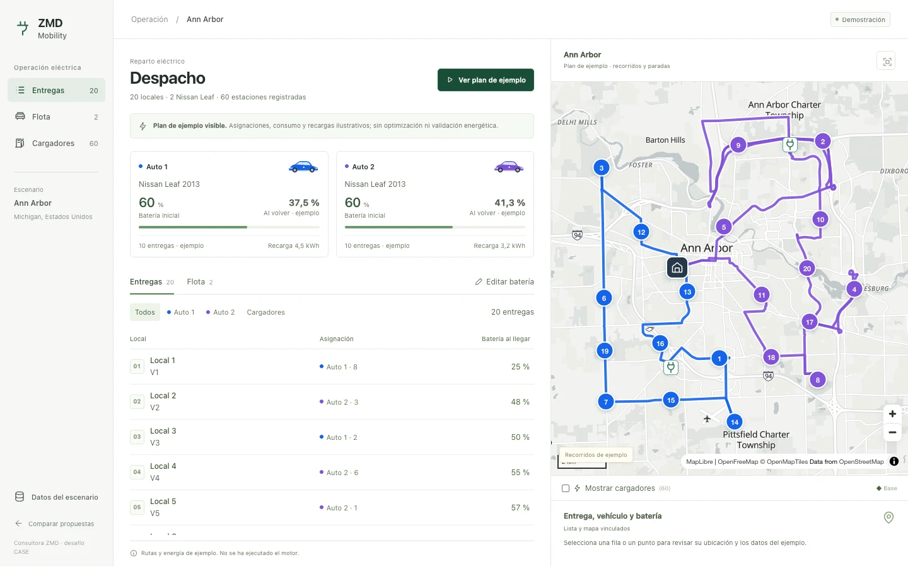
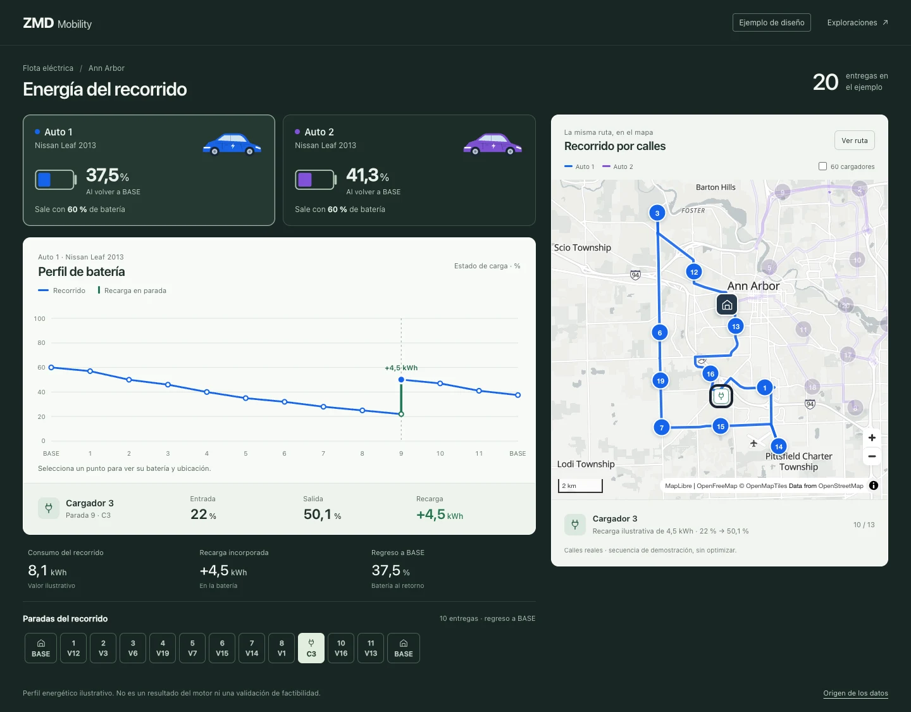
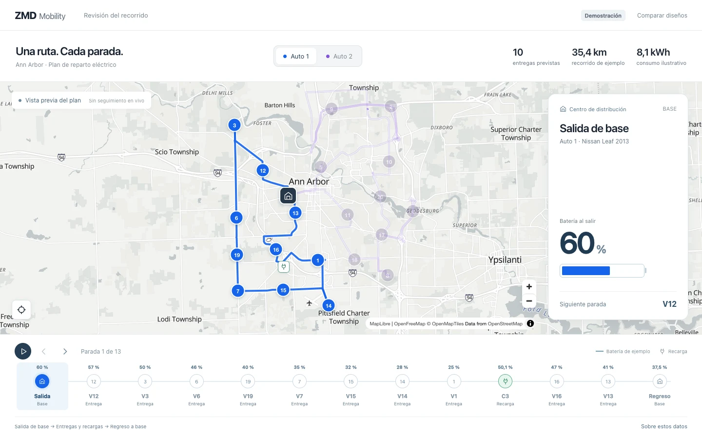

Mapa de flota
01El territorio ocupa la pantalla. Elige un auto, sigue su recorrido y abre cada entrega o recarga desde el mapa.
Explorar el mapaCuatro propuestas nuevas para explorar el mismo plan. Entra a cada una para seleccionar vehículos, revisar paradas e interactuar con el mapa.

El territorio ocupa la pantalla. Elige un auto, sigue su recorrido y abre cada entrega o recarga desde el mapa.
Explorar el mapa
Prepara el escenario y revisa las entregas en una lista. Cambia la batería inicial y comprueba qué resultados quedan pendientes.
Abrir el despacho
La energía es el punto de partida. Relaciona cada descenso y cada recarga con una parada y su ubicación.
Revisar la energía
Avanza por el plan antes de salir. La secuencia muestra qué ocurre con la batería en cada entrega y recarga.
Recorrer el planDoce propuestas nuevas: letras ZMD, conexiones eléctricas, baterías, vehículos y recorridos. Formas simples para comparar sobre fondo claro y oscuro.
Demostraciones de diseño, sin motor conectado. Ubicaciones del escenario público; recorridos de ejemplo trazados con OSRM/OpenStreetMap. El consumo, las recargas y la batería son ilustrativos. Ninguna pantalla demuestra factibilidad energética ni ahorro.